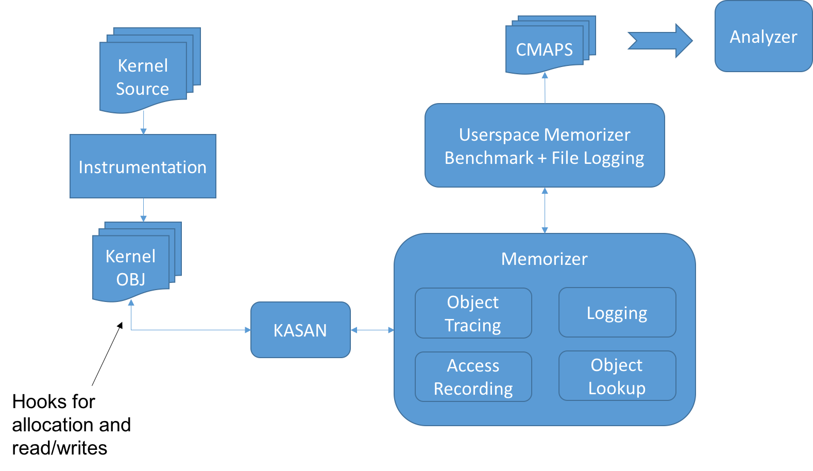

class: center, middle # OPS + Memorizer --- layout: false class: center, middle, inverse # Introduction --- class: center, middle ## What we want: Awesome, Scalable, Lightweight Multi-Tenancy --- class: center, middle ## But Security... Operating on an Untrustworthy Base --- layout: false class: center, middle, inverse # Titanic Anyone? <img src="http://upload.wikimedia.org/wikipedia/commons/f/fd/RMS_Titanic_3.jpg" alt="Drawing" style="width: 750px;"/> --- ## But Security... Operating on an Untrustworthy Base 1. Layers of vulnerable code, written by too many people to vet -- 2. Lots of it -- 3. Monolithic -- Not clear how Docker impacts the standard security ecosystem. ??? speak: The problem is that we are operating on an untrustworthy computing base, not too different than the titanic in its day. Three problems. What is also unclear is how Docker itself changes the security threat landscape given its need for privileges and particular methods of OS resource virtualization. The result is an approach that has poor fail-safe defaults, relying on bolt-on policies via SELinux/Landlock that only capture known threat vectors. --- ## Some Strategies: Replace or Harden and Separate -- - Microkernel? Yes. But what about the existing used ecosystem? -- - Goal: Apply Least Privilege -- - Tools like SELinux, Landlock, etc.: minimize app privileges to known sensitive data and operations -- - The Big Problem: What about fail-safe defaults? --- ## Limitations of Existing Approaches -- - rely on developer expertise -- - lack of visibility into the apps -- - only known safety critical resources -- - manual policy derivation -- - hard coded course grained abstractions -- - course grained ephemeral state -- - no kernel principles -- - not container aware: process based principles not best for OS virtualization --- layout: false class: center, middle, inverse ## What are threats and how can security be retrofitted? --- ## Challenges: Complexity, Transformation, and Protection -- - **Abstractions**: How do you abstract and specify policies? -- - **Flexible, Scalable, Systematic Policy Derivation**: -- - What are the principles? objects? operations? -- - How to get as non-expert? -- - How to protect all resources not just known critical? -- - **Transformation**: Given suitable policy and abstractions, how to modify the system to behave accordingly? -- - **Enforcement**: How to efficiently protect? -- - **Compatibility**: Retrofitting can cause incompatibility, how do we deal with issues? -- - **Evolution**: As threats and required privileges evolve, how hard is it to change the system? --- ## Overview of Projects -- - OPS: end-to-end approach for fine-grained security policy retrofitting -- - LINX: Linux Nested Kernel (similar to okernel): -- - kr^x: kernel randomization framework -- - Memorizer: dynamic tracer of intra-kernel interactions -- - SLICE: Separated Linux for Isolated and Compartmentalized Execution --- layout: false class: center, middle, inverse # Opportunistic Privilege Separation (OPS) --- layout: true template: default ### OPS --- ## Hypothesis: Automatically Derive Privileges from System Behavior -- - Mine existing behavior as if they are capabilities -- - Build tool suite similar to an optimizing compiler along with efficient enforcement and controlled sharing -- - But requires a privilege model -- - Goal is to approximate least-privilege with strong fail-safe defaults --- ## Our goal is maximal separation to inform various policy platforms -- - simple yet expressive and extensible privilege/policy model -- - low level representation of ephemeral state -- - minimize human in the loop --- ## Intuition through Examples There are several elements of program state that may present strong *and* performant separation --- ## Information and Interactions as a Unified Low Level Representation -- - Everything is an object -- - Objects are basic storage abstraction, comprising a set of contiguous bytes (e.g., code, data, file descriptors, etc.) -- - Object Operations: -- - Create/Destroy (alloc/free) -- - Read/Write -- - Call/Return -- - Objects have types based on the defined allocation site and size -- - Benefit: low-level yet expressive enough to capture higher level abstractions (SELinux policies?) --- ## Slice Separation Model through Ambient Authority -- - On object interactions get principle information through ambient program state -- - Slice is abstraction for concurrently operating security contexts, a multidimensional vector of separation contexts -- - Separation Context: any useful state for valuable security program cuts (code location, thread instance, namespace) -- - Extensible: easily add new context to model --- ## How do we assign initial access rights? Implicit "belongs-to" relation. -- - Use *Object-Encapsulation* model to assign rights -- - Based on the currently executing slice during object creation --- ## All that put together? -- - Context-Aware Provenance via Memory Access Pattern Maps (CAPMAPS, cmaps), also capability maps -- - Map all operations into a unified map relating actions to principles -- - The core concept of Memorizer --- layout: false class: center, middle, inverse # Memorizer --- layout: true template: default ### Memorizer --- ## Memorizer Architecture  --- ## Object Tracing: create/destroy -- - Hook Linux kernel memory allocators -- - Similar to KASAN, but did custom -- | Allocator | Complete | | :---------------- |:--------:| | kmalloc | yes | | kmem_cache_alloc | yes | | page_alloc | part | | per_cpu | no | | globals | yes | | stack | part | --- ## Access Tracing: read/write -- - KASAN instrument ld/st -- - Hook into memorizer -- - Track access metadata -- - Compress for memory utilization -- - Most slowness of memorizer is here due to simplification in implementation --- ## Object Lookup -- - On each access find object being written to -- - Use custom three level lookup table (memory hog) --- layout: false class: center, middle, inverse # Demo + Results --- layout: false class: center, middle, inverse # Path Forward --- layout: true template: default ### Path Forward --- ## Status - call/ret tracing (attempted ftrace but lossy) - convert to KASAN lookup; extend KASAN mapping; create general object lookup tracing system - minimize inline read/write operations: work queue, but time windows --- ## Practical Help - How to drive it? - How to get data out of it? - How to integrate DataKit CI? - Our goal is to drive practical use case to see data: how to configure the linuxkit.yml? - Testing: Drive it through as much of the kernel space as possible? --- ## Collaboration and Discussion -- - Extending Memorizer to support namespaces tracking and analysis -- - Docker empirical security investigation -- - How can this be used to inform tools like SELinux or Landlock? -- - Interest in a Docker security analysis? -- - Incremental rewriting of kernel components in safer languages (unikernels style: full vertical slice including subset of Linux)? --- layout: false class: center, middle, inverse # That's all folks! Slideshow created with [remark](http://gnab.github.com/remark).